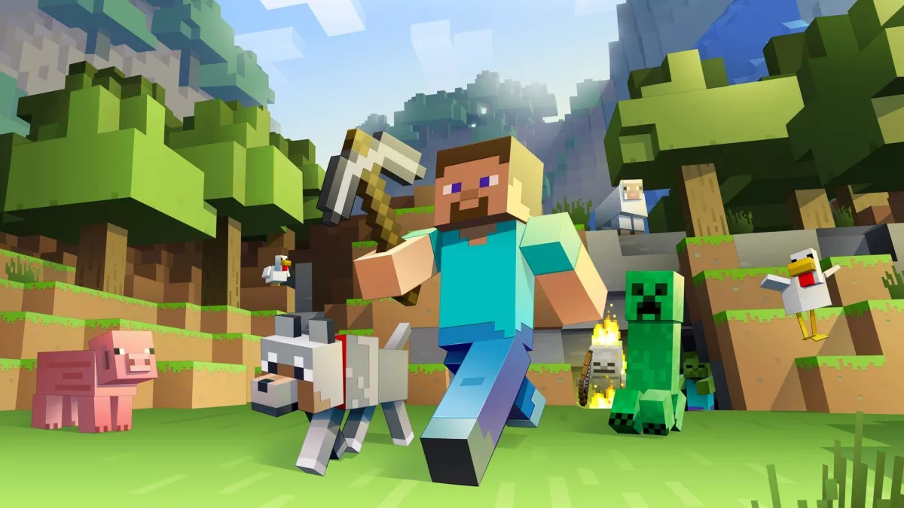

游戏简介
《我的世界》(英语: Minecraft, 香港和台湾常用英文) 是微软旗下 Mojang Studios 开发的沙盒游戏。游戏中, 玩家能在一个 3D 世界内与方块进行交互。游戏中的特色功能包括探索世界、采集资源、合成物品及生存冒险等。《我的世界》有多种模式: 生存模式中, 玩家必须维持生命并开采资源以打造自己的世界; 创造模式中, 玩家拥有无限的资源并可自由地创作建筑。
图片来源 - Mojang AB
《我的世界》最早由瑞典游戏设计师马库斯·佩尔松 (又称Notch) 开发, 之后由其成立的 Mojang Studios 开发, 主机版则与 4J Studios 合作开发。游戏最初使用 Java 语言编写, 其 Alpha 版本在 2010 年 6 月 30 日公开发布, 经逐步更新之后正式版本 1.0.0 于 2011 年 11 月 18 日发布。Android 版和 iOS 版分别于 2011 年 10 月 7 日及 11 月 17 日发售。2012 年 5 月 9 日, Mojang 通过 Xbox Live Arcade 向 Xbox 360 用户发售《我的世界》。2013 年 12 月 17 日及 2014 年 9 月 4 日, 游戏亦先后登录 PlayStation 3、PlayStation 4 平台。Xbox One 版本于同年9月5日发布。PlayStation Vita版本亦于 2014 年 10 月 14 日起开售。Windows Phone 版本于同年 10 月 10 日开始销售。2015 年 12 月 17 日, Wii U 版本发售。2017 年 5 月 11 日, 任天堂 Switch 版本发售。
2016 年 5 月, 网易游戏宣布代理《我的世界》中国版, 并于 2017 年 8 月开启公测, 对中国用户提供的《我的世界》中国版。与国际版不同, 中国版无需付费即可免费游玩, 游戏提供钻石、租凭服、会员订阅等内购项目。
《我的世界》获得业界的一致好评, 赢得众多奖项和荣誉。游戏的 Java 版以其强大的第三方拓展模组闻名, 使其可以为游戏添加各种新的对象、角色和功能。2014 年 9 月, 微软公司宣布以 25 亿美金收购 Mojang 及游戏的知识产权, 收购于两个月后完成。
截至 2021 年 5 月, 《我的世界》拥有 2.38 亿销量和 1.5 亿月活跃用户, 打破俄罗斯方块的纪录并成为有史以来最畅销的电子游戏。
C418 - Minecraft
Made by KoMoriSam!!